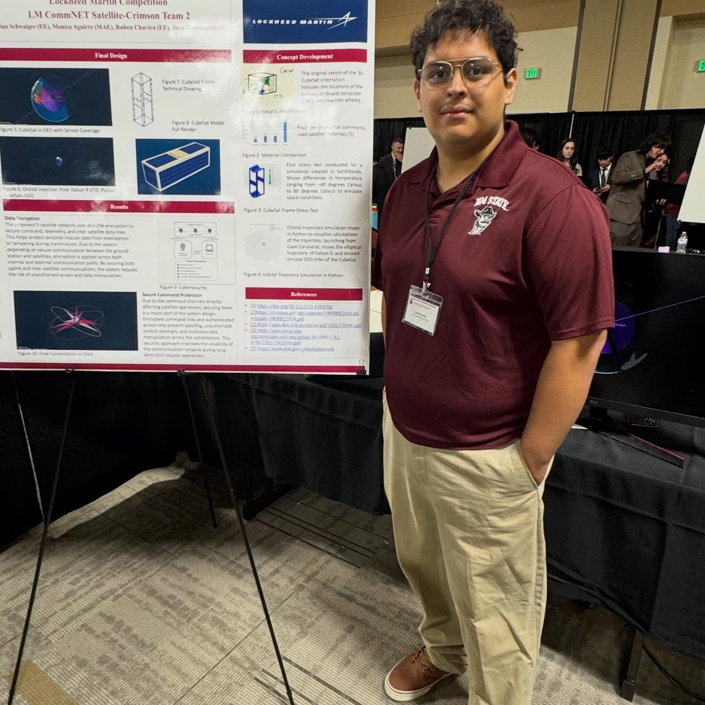

Born in El Paso, TX, I was always interested in the sky and everything that can get to it. With the rich aerospace history in the region I decided to pursue my studies at New Mexico State University, where I made connections with like-minded people. In the process to get there, I developed strong interests in mathematics and physics, with distinctions and achievements tracing back to high school. Through hard work and dedication, I have built a vast library of knowledge and tools to improve and assist the needs of the industry.
New Mexico State has also helped me interact with my community through service as a mentor and tutor. Over three years working in TRIO STEM-H, I have become well versed in the higher education environment and in how to properly help people. Alongside my peers and colleagues, I traversed several academic challenges to arrive where I am today.

My biggest point of pride is in having my hobbies and interests perfectly align with my work. Several of my projects have their roots in my personal needs and entertainment, with the rest allowing me to engage with and understand new topics. I spent the last four and a half years familiarizing myself with the tools and processes used to create incredible systems and machines; those tools allow me to develop and perfect my own inventions to the benefit of myself and those around me. Even in unrelated environments, I can always find a way to project what I have learned on to the world. From Lockheed Martin to professors I admire, several people have given me a chance and were impressed by my results; You can be next.